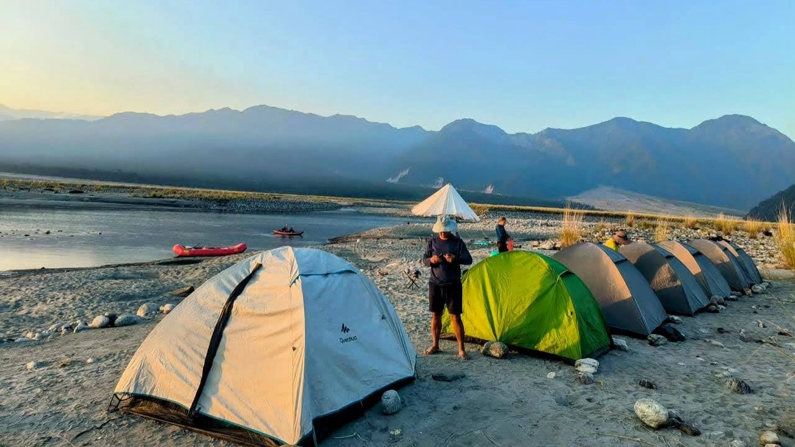
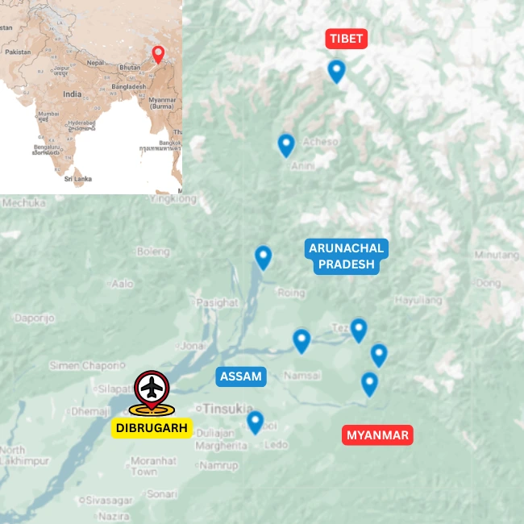

Tours
Youth Expedition · Eastern Arunachal
Arunachal Pradesh Active Youth Expedition
Active learning through rivers, forests and communities
Overview
An active learning journey through Eastern Arunachal’s river and forest country
This youth expedition adapts the Eastern Arunachal multi-activity journey into an experiential programme focused on ecology, culture and teamwork. Participants cycle on quiet valley roads, walk through forests and villages, and raft on Himalayan-fed rivers while learning to observe how landscapes and communities shape one another.
Rainforest walks, river valleys and village routes become outdoor classrooms. Guided field discussions explore biodiversity, forest use, water systems, agriculture and the pressures faced by remote ecosystems, encouraging participants to connect active travel with environmental awareness.
Time with local hosts introduces the Buddhist and Animist traditions found across Eastern Arunachal. Food, monasteries, village life, oral knowledge and everyday practices offer a grounded understanding of how belief, identity and ecology are connected.
The balance of riding, walking and rafting can be adapted to the group’s age, ability and learning goals, with shared challenges designed to build confidence, cooperation and responsibility.
Expedition Details
Route character

Learning Themes
Understand Eastern Arunachal through activity and place
The final programme is shaped around the group’s age, ability, learning objectives, available time and local conditions.
Forests, biodiversity and land use
Walk rainforest trails and village paths to study layers of vegetation, habitats and the ways local communities use and protect forest resources. Field observation and guided discussion turn the landscape into a living ecology classroom.
Rivers, valleys and active teamwork
Cycle through river valleys and raft suitable sections of Himalayan-fed water, with routes chosen for the group and season. Navigation, shared responsibility and outdoor challenges develop confidence, cooperation and awareness of water systems.
Buddhist and Animist cultures
Spend time in villages and monasteries, learning how Buddhist and Animist beliefs shape identity, festivals, food, architecture and relationships with the natural world. Encounters are designed around respectful listening and exchange.
Local livelihoods and changing communities
Explore how farming, forest products, transport, tourism and local enterprise sustain remote settlements. Conversations with hosts help participants consider how communities balance tradition, development and environmental responsibility.
Detailed programme
Ask for a programme designed for your group
Share the group’s age range, size, dates, activity experience and learning goals, and we will shape the route, activity balance, duration and cost.
Photo Gallery
Active learning in Arunachal Pradesh
Enquire
Plan an Arunachal Pradesh Active Youth Expedition
Share a few details and we will get back to you with the best route, activity balance, duration and cost options.